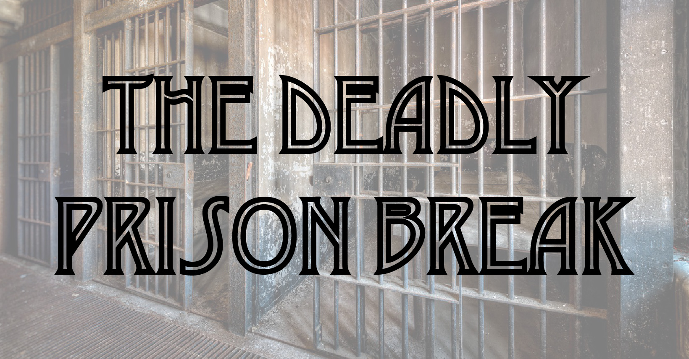

The Deadly Prison Break
Rugatha Legends

Rugatha Legends
13891
本次支線創角種族與職業皆由特定清單內隨機選擇，六項基本數值為 3、3、3、18、18、18，排序也是隨機分配。等級為 3 等。其餘角色設定皆參考 PHB 內設定。
鬆動的柵門，是引領著我們逃出生天，還是墜入深淵？
13891，新卓尼森王朝建立後 429 年，人類依然對非人生物有著很大的厭惡。
「叭—叭—叭—」巨大的聲響在牢房內響起，受刑人們本來就不安穩的睡眠更因此被打斷。
同房的龍人紅龍與魔人 Akira 起床看了看，發現牢房外的走廊上沒有任何動靜，但是柵門似乎是鬆動的。用力一扳，柵門似乎滑開了。
另一間牢房內，妖精巴巴與地精 CHAD 也被警鈴吵醒，扳開了意外鬆脫的柵門，走了出去。
獄友前一天剛被保釋的半獸人マジカル バナナさん聽見了警鈴聲，機警地躲到了牢房的陰暗角落，神經兮兮的東張西望，卻沒有動靜，因此決定用他熟悉的忍者語大喊。
混雜著普通語和其他沒有聽過語言的忍者語在牢房之間迴盪，巴巴與 CHAD 決定朝聲音的來源前進。隔幾間的牢房似乎有點動靜，兩人探了頭過去，一個臉上有著繽紛色彩的男人將臉緊緊靠了上來，十分神經質的和巴巴與 CHAD 對話。在兩人的協助下，這位名為 Logan 的男人便和他們一起朝著忍者語的方向前進。
與巴巴和 CHAD 不同，紅龍和 Akira 決定朝著反方向走。經過了幾間牢房，他們看見有兩人坐在地上，不發一語。紅龍試圖與他們溝通，得到的回音卻是他聽不懂的語言。在各種比手畫腳與威脅利誘下，兩名獄友終於站了起身，走近了他們。這兩名獄友似乎是妖精。扳開牢房的柵門後，四人便朝向忍者語的反方向前進。
扳開了柵門，マジカル バナナさん謹慎的靠著牆，躲在角落。此時巴巴、CHAD 和 Logan 剛好從另一側的轉角走了過來。似乎對「忍者語」有一點了解的巴巴試著和在角落大叫的マジカル バナナさん溝通，對於巴巴竟然能如此順暢溝通大感震驚的マジカル バナナさん跑了出來，對著巴巴大喊 Ninja Master。
紅龍和 Akira 以及尾隨他們之後的兩名妖精走向另一側的轉角，看見了一扇鐵門。其中一名妖精掏出了工具，蹲了下來，在門的底下開始動手，而他的獄友則在一旁協助。紅龍和 Akira 分別站在轉角的兩側，深怕發生了什麼突發事件。
「叭—叭—叭—」警鈴聲再次大聲地響起。
鐵門被撞開。
槍聲響起。
蹲在地上的妖精倒地不起。
另一名妖精跪在地上，用妖精語朝著闖入的獄卒求饒，換來的卻是一發子彈，打入他的腦袋。
聽見妖精語，巴巴發現事情似乎不太對勁，便和身邊的夥伴們討論接下來該怎麼做。Logan 似乎躍躍欲試，劃開了自己的前臂，將流出的鮮血化為一把鮮紅色的劍，便朝著槍聲的來源衝去。其他三人則決定慢慢靠過去。
見到兩名突然死去的妖精，紅龍試著放火，Akira 則朝著旁邊逃跑。
槍聲不斷響起，四名重裝的獄卒不斷開槍，獄友們努力抗戰，在生與死之間掙扎。終於，四名獄卒中有三名倒地不起，另一名則暫時消失在獄友們的視線範圍內。
眼看大好機會，巴巴趕緊從獄卒進來的門跑了出去，誰知道在他踏出門的那一刻，倒在地上的獄卒身體突然爆炸，站在獄卒旁的獄友們全數重傷，甚至死亡，而門外，盡是一片漆黑。跟隨著巴巴，紅龍和マジカル バナナさん兩人也成功地逃到了門外，一次次地踏出，一次次的爆炸，那些機械般的獄卒像是沒有血肉般的爆炸機器，除了流出黑色的油以外，毫無動靜。
走在漆黑的空間內，マジカル バナナさん摸著牆壁前行，紅龍與巴巴跟隨其後，最終找到了一口奇異的井：除了貼在地面上的井口外，還有個貼在他們頭頂上方，長得一模一樣的井，而洶湧的井水從上方的井口朝著下方沖。マジカル バナナさん試著爬上上方的井口，並釘上岩釘，卻在將岩釘牢牢釘上，並掛上他的繩子後，因為沒有抓穩，而落入井底的深淵。
看著マジカル バナナさん釘上的岩釘，巴巴抓著マジカル バナナさん掛上的繩索—此刻，他發現在急流的井水中竟然還有一根更為牢固的繩索，於是巴巴和紅龍便攀著繩索，努力的朝上爬。
爬了好一陣子後，似乎到了一層地面。兩人爬出了地面的井口，朝著旁邊的通道向前走。好一段時間後，他們開始聽見人聲，也看見了一扇木門。打開木門，似乎是一間小倉庫。巴巴和紅龍找到了倉庫通往外面的門，他們置身於巷弄之中。
問題是，此刻兩人依然穿著著獄衣。
兩人決定先躲回倉庫內，隨著兩名僕人出現在倉庫內，巴巴將兩人擊倒，換上了僕人裝，兩人小心翼翼的走了出去。
跟隨著大多數僕人的方向，兩人走到了一處柵門。衛兵似乎看見了紅龍身上有種不對勁的感覺，攔住了他，巴巴則順利的穿越了柵門外的王宮花園，邁向了自由。
被帶到一旁的紅龍機警的召喚出了兩隻冒火的生物，著實讓衛兵嚇得一身冷汗，便也決定放他離開。
最終，紅龍也走過了麥克嵩的王宮花園，遠離了他被關了好久好久的監獄。